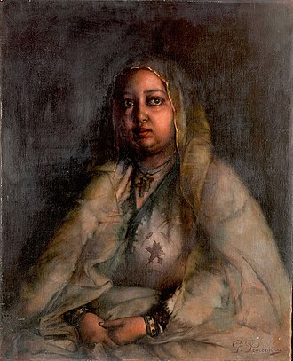

Empress Taytu Betul of Ethiopia was a remarkable figure known for her political astuteness, unwavering defense of Ethiopian sovereignty, and advocacy for women's rights. Her legacy is defined by a commitment to cultural preservation, philanthropy, and a profound impact on Ethiopian history, symbolizing strength, resilience, and empowerment in a pivotal period of the country's development.
